정보처리기사(구) (2019-08-04 기출문제)
1과목: 데이터 베이스
1. 관계 해석 ‘모든 것에 대하여(for all)'의 의미를 나타내는 것은?
- ∋
- ∈
- ∀
- ∪
(정답률: 69%)

2. 트랜잭션의 병행제어 목적으로 옳지 않은 것은?
- 데이터베이스의 공유 최대화
- 시스템의 활용도 최대화
- 데이터베이스의 일관성 최소화
- 사용자에 대한 응답시간 최소화
(정답률: 74%)
3. 다음 설명에 해당하는 것은?
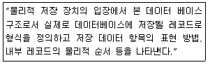
- 외부 스키마
- 내부 스키마
- 개념 스키마
- 슈퍼 스키마
(정답률: 69%)
4. 순수관계연산자에서 릴레이션의 일부 속성만 추출하여 중복되는 튜플은 제거한 후 새로운 릴레이션을 생성하는 연산자는?
- REMOVE
- PROJECT
- DIVISION
- JOIN
(정답률: 39%)
5. Which of the following dose not belong to the DML statement of SQL?
- SELECT
- DELETE
- CREATE
- INSERT
(정답률: 74%)
6. SQL의 분류 중 DDL에 해당하지 않는 것은?
- UPDATE
- ALTER
- DROP
- CREATE
(정답률: 74%)
7. 병행제어(Concurrency Control) 기법에 해당하지 않는 것은?
- 로킹기법
- 최적병행수행 기법
- 타임스탬프 기법
- 시분할 기법
(정답률: 42%)
8. 다음 SQL문의 실행결과는?
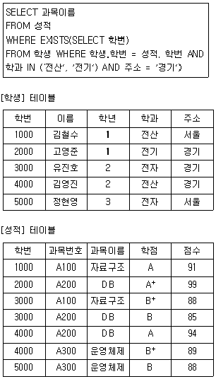
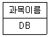
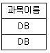
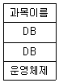
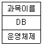
(정답률: 62%)
9. 다음의 관계 대수식을 SQL 질의로 옳게 표현 한 것은?
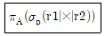
- select P from r1, r2 where A;
- select A from r1, r2 where P;
- select r1, r2 from A where P;
- select A from r1, r2
(정답률: 49%)
10. 뷰(View)에 대한 설명으로 옳지 않은 것은?
- 뷰 위에 또 다른 뷰를 정의할 수 있다.
- DBA는 보안 측면에서 뷰를 활용할 수 있다.
- 뷰의 정의는 ALTER문을 이용하여 변경할 수 없다.
- SQL을 사용하면 뷰에 대한 삽입, 갱신, 삭제 연산 시 제약사항이 없다.
(정답률: 67%)
11. 다음 수식을 후위 표기법(postfix)으로 옳게 표시한 것은?
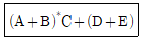
- AB+CDE*++
- AB+C*DE++
- +AB*C+DE+
- +*+ABC+DE
(정답률: 62%)
12. 다음은 스텍의 자료 삭제 알고리즘이다. ⓐ에 들어갈 내용으로 옳은 것은? (단, Top:스텍포인터, S:스택의 이름)
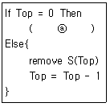
- Overflow
- Top=Top+1
- Underflow
- Top=Top
(정답률: 55%)
13. 하나의 에트리뷰트가 가질 수 있는 원자값들의 집합을 의미하는 것은?
- 튜플
- 릴레이션
- 도메인
- 엔티티
(정답률: 64%)
14. 정규화 과정 중 1NF에서 2NF가 되기 위한 조건은?
- 1NF를 만족하고 모든 도메인이 원자값이어야 한다.
- 1NF를 만족하고 키가 아닌 모든 애트리뷰트가 기본키에 대해 이행적으로 함수 종속되지 않아야 한다.
- 1NF를 만족하고 키가 다치 종속이 제거되어야 한다.
- 1NF를 만족하고 키가 아닌 모든 속성이 기본키에 대하여 완전 함수적 종속 관계를 만족해야 한다.
(정답률: 60%)
15. DDL(Data Definition Language)의 기능이 아닌 것은?
- 데이터 베이스의 생성 기능
- 병행처리시 Lock 및 Unlock 기능
- 테이블의 삭제 기능
- 인덱스(Index) 생성 기능
(정답률: 65%)
16. 참조 무결성을 유지하기 위하여 DROP문에서 부모 테이블의 항목 값을 삭제할 경우 자동적으로 자식 테이블의 항목 값을 삭제할 경우 자동적으로 자식 테이블의 해당 레코드를 삭제하기 위한 옵션은?
- CLUSTER
- CASCADE
- SET-NULL
- RESTEICTED
(정답률: 74%)
17. 헤싱함수(Hashing Function)에 해당되지 않는 것은?
- 제곱법(mid-square)
- 숫자분석법(digit analysis)
- 체인법(chain)
- 제산법(division)
(정답률: 46%)
18. 이행적 함수 종속 관계를 의미하는 것은?
- A→B이고 B→C일 때, A→C를 만족하는 관계
- A→B이고 B→C일 때, B→A를 만족하는 관계
- A→B이고 B→C일 때, B→A를 만족하는 관계
- A→B이고 B→C일 때, C→B를 만족하는 관계]
(정답률: 79%)
19. 순서가 A, B, C, D로 정해진 입력 자료를 스택에 입력하였다가 출력한 결과로 옳은 것은?
- A, D, B, C
- B, A, D, C
- C, A, B, D
- D, B, C, A
(정답률: 50%)
20. 다음 트리의 차수(degree)는?
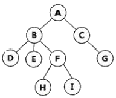
- 2
- 3
- 4
- 5
(정답률: 67%)
2과목: 전자 계산기 구조
21. 10진수 -456을 PACK 형식으로 표현한 것은?
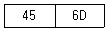
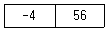
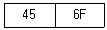
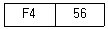
(정답률: 20%)
22. 8비트 구조에 해당하는 인텔 컴퓨터 프로세서는?
- Intel Core i5
- Intel 8⑤1
- Intel Pentium
- Intel Celeron
(정답률: 28%)
23. INTERRUPT의 발생 원인으로 가장 옳지 않은 것은?
- 일방적인 인스트럭션 수행
- 수퍼바이저 콜
- 정전이나 자료 전달의 오류 발생
- 전압의 변화나 온도 변화
(정답률: 26%)
24. 일반적인 컴퓨터 시스템의 바이오스(BIOS)가 탑재되는 곳은?
- RAM
- I/O port
- ROM
- CPU
(정답률: 30%)
25. 캐시(cache) 액세스 시간 11sec, 주기억장치 엑세스 시간이 20sec, 캐시 적중률이 90%일 때 기억장치 평균 엑세스 시간을 구하면?
- 1sec
- 3sec
- 9sec
- 13sec
(정답률: 23%)
26. 메이저 스테이트 중 하드웨어로 실현되는 서브루틴의 호출이라고 볼 수 있는 것은?
- EXCUTE 스테이트
- INDIRECT 스테이트
- INTERRUPT 스테이트
- FETCH 스테이트
(정답률: 23%)
27. 중재동작이 끝날 때마다 모든 마스터들의 우선순위가 한 단계씩 낮아지고 가장 우선순위가 낮았던 마스터가 최상위 우선순위를 가지도록 하는 가변우선순위 방식은?
- 동등 우선순위(Equal Priority) 방식
- 임의 우선순위(Random Priority) 방식
- 회전 우선순위(Rotating Priority) 방식
- 최소-최근 사용(Least Recently Used) 방식
(정답률: 33%)
28. DRAM에 관한 설명으로 옳지 않은 것은?
- SRAM에 비해 기억 용량이 크다.
- 쌍안정 논리 회로의 성질을 응용한다.
- 주기억 장치 구성에 사용된다.
- SRAM에 비해 속도가 느리다.
(정답률: 26%)
29. 다음 마이크로 연산이 나타내는 동작은?
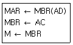
- Branch AC
- Store to AC
- Add AC
- Load to AC
(정답률: 20%)
30. 다음 중 오류 검출 코드(Error Detection Code)가 아닌 것은?
- Biquinary code
- 2-out-of-5 code
- 3-out-of-5 code
- Excess-3 code
(정답률: 22%)
31. 메모리 인터리빙과 관계없는 것은?
- 데이터의 저장 공간을 확장하기 위한 방법이다.
- 복수 모듈 기억 장치를 이용한다.
- 기억장치에 접근을 각 모듈에 번갈아 가면서 하도록 한다.
- 각 인스트럭션에서 사용하는 데이터의 주소에 관계가 있다.
(정답률: 18%)
32. 전가산기를 구성하기 위하여 필요한 소자를 바르게 나타낸 것은?
- 반가산기 2개, AND 게이트 1개
- 반가산기 1개, AND 게이트 2개
- 반가산기 2개, OR 게이트 1개
- 반가산기 1개, OR 게이트 2개
(정답률: 24%)
33. 16개의 플립플롭으로 된 Shift register에 10진수 13이 기억되어 있을 때 3bit 만큼 왼쪽으로 Shift 했을 때의 값은?
- 26
- 39
- 52
- 104
(정답률: 26%)
34. 기억장치계층구조에서 상위계층 기억장치가 가지는 특징으로 옳은 것은?
- 기억장치 액세스 속도가 느려진다.
- CPU에 의한 액세스 빈도가 높아진다.
- 기억장치 용량이 증가한다.
- 기억장치를 구성하는 비트당 가격이 낮아진다.
(정답률: 29%)
35. 컴퓨터의 메이저 상태에 대한 설명으로 틀린 것은?
- EXECUTE 상태가 끝나면 항상 FETCH 상태로만 간다.
- 간접 주소 명령어 형식인 경우 FETCH-INDIRECT-EXECUTE 순서로 진행되어야 한다.
- EXECUTE 상태는 연산자 코드의 내용에 따라 연산을 수행하는 과정이다.
- FETCH 상태에서는 기억 장치에서 인스트럭션을 읽어 중앙처리장치로 가져온다.
(정답률: 28%)
36. 기억장치가 1024 워드(word)로 구성되어 있고, 각 워드는 16비트(bit)로 구성되어 있다고 가정할 때, PC, MAR, MBR의 비트수를 옳게 나타낸 것은?
- PC:10, MAR:10, MBR:10
- PC:10, MAR:10, MBR:16
- PC:16, MAR:10, MBR:16
- PC:16, MAR:16, MBR:16
(정답률: 29%)
37. 입출력 방법 가운데 I/O를 위한 특별한 명령어 I/O프로세서에게 수행토록하여 CPU관여없이 I/O를 수행하는 방법은?
- 프로그램에 의한 I/O
- 인터럽트에 의한 I/O
- 데이지 체인에 의한 I/O
- 채널에 의한 I/O
(정답률: 20%)
38. 0-주소 인스트럭션에 반드시 필요한 것은?
- 스택
- 베이스 레지스터
- 큐
- 주소 레지스터
(정답률: 25%)
39. 누산기(accumulator)에 대한 설명으로 가장 옳은 것은?
- 연산장치에 있는 레지스터(register)의 하나로 연산 결과를 일시적으로 기억하는 장치이다.
- 주기억장치 내에 존재하는 회로로 가감승제 계산 및 논리 연산을 행하는 장치이다.
- 일정한 입력 숫자들을 더하여 그 누계를 항상 보관하는 장치이다.
- 정밀 계산을 위해 특별히 만들어 두어 유효숫자의 개수를 늘리기 위한 것이다.
(정답률: 26%)
40. 16개의 입력선을 가진 multiplexer의 출력에 32개의 출력선을 가진 demultiplexer를 연결했을 경우에 multiplexer와 demultipexer의 선택선은 각각 몇 개를 가져야 하는가?
- multiplexer : 4개, demultipexer : 5개
- multiplexer : 4개, demultipexer : 3개
- multiplexer : 8개, demultipexer : 4개
- multiplexer : 4개, demultipexer : 8개
(정답률: 26%)
3과목: 운영체제
41. 절대로더에서 각 기능과 수행 주체의 연결이 가장 옳지 않은 것은?
- 연결-프로그래머
- 기억장소할당-로더
- 적재-로더
- 재비치-어셈블러
(정답률: 28%)
42. UNIX운영체제에 관한 특징으로 가장 옳지 않은 것은?
- 하나 이상의 작업에 대하여 백그라운드에서 수행 가능하다.
- Multi-User는 지원하지만 Multi-tasking은 지원하지 않는다.
- 트리 구조의 파일 시스템을 갖는다.
- 이식성이 높이며 장치 간의 호환성이 높다.
(정답률: 57%)
43. 파일 구조 중 순차편성에 대한 설명으로 옳지 않은 것은?
- 특정 레코드를 검색할 때, 순차적 검색을 하므로 검색 효율이 높다.
- 어떠한 기억매체에서도 실현 가능하다.
- 주기적으로 처리한 경우에 시간적으로 속도가 빠르며, 처리하는 경우에 시간적으로도 속도가 빠르며, 처리비용이 절감된다.
- 순차적으로 실제 데이터만 저장되므로 기억공간의 활용률이 높다.
(정답률: 35%)
44. 3개의 페이지를 수용할 수 있는 주기억장치가 있으며, 초기에는 모두 비어 있다고 가정한다. 다음의 순서로 페이지 참조가 발생할 때, FIFO 페이지 교체 알고리즘을 사용할 경우 몇 번의 페이지 결함이 발생하는가?
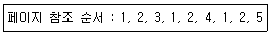
- 4
- 5
- 6
- 7
(정답률: 41%)
45. 빈 기억공간의 크기가 20K, 16K, 8K, 40K일 때 기억장치 배치 전략으로 “Worst Fit"을 사용하여 17K의 프로그램을 적재할 경우 내부 단편화의 크기는?
- 3K
- 23K
- 44K
- 67K
(정답률: 57%)
46. 스레드(Threads)에 관한 설명으로 옳지 않은 것은?
- 하드웨어, 운영체제의 성능과 응용프로그램의 처리율을 향상시킬 수 있다.
- 스레드는 그들이 속한 프로세스의 자원과 메모리를 공유한다.
- 다중 프로세스 구조에서 각 스레드는 다른 프로세스에서 병렬로 실행될 수 있다.
- 스레드는 동일 프로세스 환경에서 서로 다른 독립적인 다중수행이 불가능하다.
(정답률: 60%)
47. 교착상태의 해결 기법 중 일반적으로 자원의 낭비가 가장 심한 것으로 알려진 기법은?
- 교착상태의 예방
- 교착상태의 회피
- 교착상태의 발견
- 교착상태의 복구
(정답률: 32%)
48. PCB(Process Control Block)가 갖고 있는 정보가 아닌 것은?
- 할당되지 않은 주변장치의 상태 정보
- 프로세스의 현재 상태
- 프로세스의 고유 식별자
- 스케줄링 및 프로세스의 우선순위
(정답률: 54%)
49. 가상주소와 물리주소의 대응 관계로 가상주소로부터 물리주소를 찾아내는 것을 무엇이라고 하는가?
- 스케줄링(Scheduling)
- 매핑(mapping)
- 버퍼링(buffering)
- 스왑-인(swap in)
(정답률: 62%)
50. 다중처리(Multi-Processing) 시스템에 대한 설명으로 가장 적합한 것은?
- 요구사항이 비슷한 여러 개의 작업을 모아서 한꺼번에 처리하는 방식이다.
- 동시에 프로그램을 수행할 수 있는 CPU를 여러 개 두고 업무를 분담하여 처리하는 방식이다.
- 시한성을 갖는 자료가 발생할 때마다 즉시 처리하여 결과를 출력하거나, 요구에 응답하는 방식이다.
- 분산된 여러 개의 단말에 분담시켜 통신회선을 통하여 상호간에 교신, 처리하는 방식이다.
(정답률: 48%)
51. UNIX의 쉘(Shell)에 대한 설명으로 가장 옳지 않은 것은?
- 시스템과 사용자 간의 인터페이스를 담당한다.
- 프로세스 관리, 파일관리, 입ㆍ출력 관리, 기억장치 관리 등의 기능을 수행한다.
- 명령어 해석기 역할을 한다.
- 사용자의 명령어를 인식하여 프로그램을 호출한다.
(정답률: 54%)
52. 보안유지기법 중 하드웨어나 운영체제에 내장된 보안 기능을 이용하여 프로그램의 신뢰성 있는 운영과 데이터의 무결성 보장을 가하는 기법은?
- 외부보안
- 운용보안
- 사용자 인터페이스 보안
- 내부보안
(정답률: 50%)
53. 다음 설명에 해당하는 디렉토리 구조는?
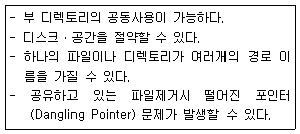
- 비순환 그래프 디렉토리 시스템
- 트리구조 디렉토리 시스템
- 1단계 디렉토리 시스템
- 2단계 디렉토리 시스템
(정답률: 26%)
54. 다음은 분산 처리 시스템의 네트워크 위상 중 무엇이 대한 설명인가?
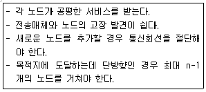
- 완전 연결 구조
- 계층 연결 구조
- 성형 구조
- 링형 구조
(정답률: 50%)
55. 다음은 교착상태 발생조건 중 어떤 조건을 제거하기 위한 것인가?
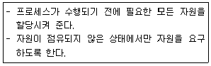
- Mutual Exclusion
- Hold and Wait
- Non Preemption
- Circular Wait
(정답률: 35%)
56. 운영체제의 기능으로 가장 거리가 먼 것은?
- 사용자의 편리한 환경 제공
- 처리능력 및 신뢰도 향상
- 컴퓨터 시스템의 성능 최적화
- 언어번역기능을 통한 실행 가능한 프로그램 생성
(정답률: 62%)
57. 다음과 같은 3개의 작업에 대하여 FCFS 알고리즘을 사용할 때, 임의의 작업 순서로 얻을 수 있는 최대 평균 반환 시간을 T, 최소 평균 반환 시간을 t라고 가정했을 경우 T-t의 값은?
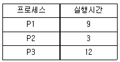
- 3
- 4
- 5
- 6
(정답률: 31%)
58. UNIX에서 각 파일에 대한 정보를 기억하고 있는 자료구조로서 파일 소유자의 식별번호, 파일 크기, 파일의 최종 수정시간, 파일 링크 수 등의 내용을 가지고 있는 것은?
- Super block
- ⅰ-node
- Directory
- File ststem mounting
(정답률: 39%)
59. 운영체제의 목적으로 적합하지 않은 것은?
- Throughput 향상
- Turn around time 단축
- Availability 감소
- Reliability
(정답률: 57%)
60. 파일 구성 방식 중 ISAM(Indexed Sequential Access-Method)의 물리적인 색인(index)구성은 디스크의 물리적 특성에 따라 색인을 구성하는데, 다음 중 3단계 색인에 해당되지 않는 것은?
- Cylinder index
- Tracki index
- Master index
- Volume index
(정답률: 31%)
4과목: 소프트웨어 공학
61. 실시간 소프트웨어 설계 시 고려해야 할 사항이 아닌 것은?
- 인터럽트와 문맥 교환의 표현
- 태스크들 간의 통신과 동기화
- 동기적인 프로세싱
- 타이밍 제약의 표현
(정답률: 31%)
62. 하향식 통합 테스트 수행을 위해 일시적으로 필요한 조건만을 가지고 임시로 제공되는 시험용 모듈의 명칭은?
- alpha
- builder
- cluster
- stub
(정답률: 56%)
63. NS차트(Nassi-Schneiderman chart)에 대한 설명으로 가장 옳지 않은 것은?
- 논리의 기술에 중점을 두고 도형을 이용한 표현 방법이다.
- 이해하기 쉽고 코드 변환이 용이하다.
- 화살표나 GOTO를 사용하여 이해하기 쉽다.
- 연속, 선택, 반복 등의 제어 논리 구조를 표현한다.
(정답률: 44%)
64. 프로토타입 모형에 대한 설명으로 가장 옳지 않은 것은?
- 개발 단계 안에서 유지보수가 이루어지는 것으로 볼 수 있다.
- 최종 결과물이 만들어지는 소프트웨어 개발 완료시점에 최초로 오류 발견이 가능하다.
- 발주자나 개발자 모두에게 공동의 참조모델을 제공한다.
- 사용자나 요구사항을 충실히 반영할 수 있다.
(정답률: 58%)
65. Rumbaugh의 모델링에서 상태도와 자료흐름도는 각각 어떤 모델링과 가장 관련이 있는가?
- 상태도-동적 모델링, 자료 흐름도-기능 모델링
- 상태도-기능 모델링, 자료 흐름도-동적 모델링
- 상태도-객체 모델링, 자료 흐름도-기능 모델링
- 상태도-객체 모델링, 자료 흐름도-동적 모델링
(정답률: 38%)
66. 화이트박스 검사로 찾기 힘든 오류는?
- 논리흐름도
- 자료구조
- 루프구조
- 순환복잡도
(정답률: 33%)
67. 소프트웨어 개발 과정에서 사용되는 요구분석, 설계, 구현, 검사 및 디버깅 과정 전체 또는 일부를 컴퓨터와 전용의 소프트웨어 도구를 사용하여 자동화하는 것은?
- CAD(Computer Aided Design)
- CAI(Computer Aided Instruction)
- CAT(Computer Aided Testing)
- CASE(Computer Aided Software Engineering)
(정답률: 63%)
68. 소프트웨어 재사용에 대한 설명으로 가장 옳은 것은?
- 프로젝트 실패의 위험을 증가시킨다.
- 소프트웨어를 재사용함으로써 유지보수 비용이 높아진다.
- 모든 소프트웨어를 재사용해야 한다.
- 소프트웨어의 개발 생산성과 품질을 높이려는 주요 방법이다.
(정답률: 61%)
69. 소프트웨어 비용 산정 기법 중 산정 요원과 조정자에 의해 산정하는 방법은?
- 기능 점수 기법
- LOC 기법
- COCOMO 기법
- 델파이 기법
(정답률: 41%)
70. User Interface 설계 시 오류 메시지나 경고에 관한 지침으로 가장 옳지 않은 것은?
- 메시지는 이해하기 쉬워야 한다.
- 오류로부터 회복을 위한 구체적인 설명이 제공되어야 한다.
- 오류로 인해 발생될 수 있는 부정적인 내용은 가급적 피한다.
- 소리나 색 등을 이용하여 듣거나 보기 쉽게 의미 전달을 하도록 한다.
(정답률: 62%)
71. 자료사전에서 자료의 연결(“and")을 나타내는 기호는?
- +
- =
- ( )
- { }
(정답률: 63%)
72. 다음 중 가장 높은 응집도(Cohesion)에 해당하는 것은?
- 순서적 응집도(Sequential Cohesion)
- 시간적 응집도(Temporal Cohesion)
- 논리적 응집도(Logical Cohesion)
- 절차적 응집도(Procedural Cohesion)
(정답률: 42%)
73. 소프트웨어 생명 주기에서 가장 많은 비용이 소요되는 단계는?
- 계획단계
- 유지보수단계
- 분석단계
- 구현단계
(정답률: 52%)
74. COCOMO(Constructive Cost Model) 모형에 대한 설명으로 옳지 않은 것은?
- 산정 결과는 프로젝트를 완성하는데 필요한 man-month로 나타난다.
- 보헴(Boehm)이 제안한 것으로 원시코드 라인 수에 의한 비용 산정 기법이다.
- 비용견적의 유연성이 높아 소프트웨어 개발비 견적에 널리 통용되고 있다.
- 프로젝트 개발유형에 따라 object, dynamic, function의 3가지 모드로 구분한다.
(정답률: 46%)
75. 소프트웨어 품질 관리 기술에서 품질 목표와 항목과 가장 거리가 먼 것은?
- 정확성
- 종속성
- 유연성
- 무결성
(정답률: 58%)
76. 시스템에서 모듈 사이의 결합도(Coupling)에 대한 설명으로 옳은 것은?
- 한 모듈 내에 있는 처리요소를 사이의 기능적인 연관 정도를 나타낸다.
- 결합도가 높으면 시스템 구현 및 유지보수 작업이 어렵다.
- 모듈간의 결합도를 약하게 하면 모듈 독립성이 향상된다.
- 자료결합도는 내용결합도 보다 결합도가 높다.
(정답률: 43%)
77. DFD(Data Flow Diagram)에 대한 설명으로 거리가 먼 것은?
- 단말(Terminator)은 원으로 표기한다.
- 구조적 분석 기법에 이용된다.
- 자료 흐름과 기능을 자세히 표현하기 위해 단계적으로 세분화된다.
- 자료 흐름 그래프 또는 버플(Bubble)차트라고도 한다.
(정답률: 40%)
78. S/W 프로젝트 계획 수립 시 소프트웨어 영역(software scope)결정사항에 기술되어야 할 주요사항으로 가장 거리가 먼 것은?
- 인적자원
- 기능
- 제약조건
- 인터페이스
(정답률: 53%)
79. 소프트웨어 품질 목표 중 요구되는 기능을 수행하기 위해 필요한 자원의 소요 정도를 의미하는 것은?
- Usability
- Reliability
- Efficiency
- Functionality
(정답률: 32%)
80. 객체에게 어떤 행위를 하도록 지시하는 명령은?
- Class
- Instance
- Object
- Message
(정답률: 59%)
5과목: 데이터 통신
81. 무선 LAN에서 사용되는 매체접근방식(MAC)은?
- ALOHA
- tokec passing
- CSMA/CD
- CSMA/CA
(정답률: 29%)
82. 데이터 변조속도가 3600 baud이고 퀘드비트(Quad bit)를 사용하는 경우 전송속도(bps)는?
- 14400
- 10800
- 9600
- 7200
(정답률: 40%)
83. ARP(Address Resolution Protocol)에 대한 설명으로 틀린 것은?
- 네트워크에서 두 호스트가 성공적으로 통신하기 위하여 각 하드웨어의 물리적인 주소문제를 해결해 줄 수 있다.
- 목적지 호스트의 IP주소를 MAC주소로 바꾸는 역할을 한다.
- ARP캐시를 사용하므로 캐시에서 대상이 되는 IP주소의 MAC주소를 발견하면 이 MAC주소가 통신을 위해 사용된다.
- ARP캐시를 유지하기 위해서는 TTL값이 0이 되면 이 주소는 ARP캐시에서 영구히 보존된다.
(정답률: 44%)
84. IPv6의 헤더 항목이 아닌 것은?
- Flow label
- Payload length
- HOP limit
- Section
(정답률: 26%)
85. HDLC(HIGI-Ievel Data Link Control) 프레임형식으로 옳은 것은?
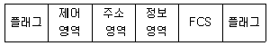
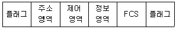
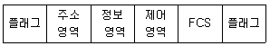
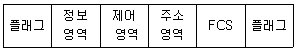
(정답률: 33%)
86. 주파수 분할 다중화기(FDM)에서 부채널 간의 상호 간섭을 방지하기 위한 것은?
- 가드 밴드(Guard Band)
- 채널(Channel)
- 버퍼(Buffer)
- 슬롯(Slot)
(정답률: 40%)
87. 한 개의 프레임을 전송하고, 수신 측으로부터 ACK 및 NAK 신호를 수신할 때까지 정보전송을 중지하고 기다리는 ARQ(Automatic Repeat Request) 방식은?
- CRC 방식
- GO-back-N 방식
- Stop-and-Wait 방식
- Selective Repeat 방식
(정답률: 49%)
88. IEEE 802.5는 무엇에 대한 표준인가?
- 이더넷
- 토큰링
- 토큰버스
- FDDI
(정답률: 29%)
89. 양자화 잡음에 대한 설명으로 옳은 것은?
- PAM 펄스의 아날로그 값을 양자화 잡음이라 한다.
- PCM 펄스의 디지털 값을 양자화 잡음이라 한다.
- PCM 펄스의 아날로그 값과 양자화된 PCM펄스의 디지털 값의 합을 양자화 잡음이라 한다.
- PCM 펄스의 아날로그 값과 양자화된 PCM 펄스의 디지털 값의 차이를 양자화 잡음이라 한다.
(정답률: 32%)
90. 아날로그 변조방식에 해당되지 않는 것은?
- AM
- FM
- PM
- DM
(정답률: 38%)
91. 현재 많이 사용되고 있는 LAN방식인 “10BASE-T”에서 “10”이 가리키는 의미는?
- 데이터 전송속도가 10Mbps
- 케이블 굵기가 10 밀리미터
- 접속할 수 있는 단말의 수가 10대
- 배선할 수 있는 케이블의 길이가 10미터
(정답률: 41%)
92. X.25 프로토콜에서 정의하고 있는 것은?
- 다이얼 접속(dial access)을 위한 기술
- Start-Stop 데이터를 위한 기술
- 데이터 비트 전송률
- DTE와 DCE 간 상호접속 및 통신절차 규정
(정답률: 35%)
93. 4진 PSK의 반송파 간의 위상차(°)는?
- 45°
- 90°
- 180°
- 360°
(정답률: 33%)
94. 패킷교환에 대한 설명으로 틀린 것은?
- 전송데이터를 패킷이라 부르는 일정한 길이의 전송단위로 나누어 교환 및 전송한다.
- 패킷교환은 축적교환 방식을 사용한다.
- 가상회선 방식은 비연결형 지향 서비스라고도 한다.
- 메시지 교환이 갖는 장점을 그대로 취하면서 대화형 데이터 통신에 적합하도록 개발된 교환방식이다.
(정답률: 32%)
95. 링크상태 라우팅 알고리즘을 사용하며, 대규모 네트워크에 적합한 것은?
- RIP
- VPN
- OSPF
- XOP
(정답률: 36%)
96. HDLC 프레임 구조 중 헤더를 구성하는 플래그(flag)에 대한 설명으로 틀린 것은?
- 프레임의 최종목적 주소를 나타낸다.
- 동기화에 사용된다.
- 프레임의 시작과 끝을 표시한다.
- 01111110의 형식을 취한다.
(정답률: 27%)
97. TCP/IP 관련 프로토콜 중 응용계층에 해당하지 않는 것은?
- ARP
- DNS
- SMTP
- HTTP
(정답률: 36%)
98. C class에 속하는 IP address는?
- 200.168.30.1
- 10.3.2.1
- 225.2.4.1
- 172.16.98.3
(정답률: 31%)
99. 회선 교환망에 대한 설명으로 옳은 것은?
- 일반적으로 전송속도 및 코드변환이 가능하다.
- 전송 대역폭 사용이 가변적이다.
- 물리적인 통신경로가 통신 종료시까지 구성된다.
- 소량의 데이터 전송에 효율적이다.
(정답률: 28%)
100. 인터넷 제어 메시지 프로토콜(ICMP)에 관한 설명으로 옳지 않은 것은?
- 에코 메시지는 호스트가 정상적으로 동작하는 지를 결정하는 데 사용할 수 있다.
- 물리계층 프로토콜이다.
- 메시지 형식은 8바이트의 헤더와 가변길이의 데이터 영역으로 분리된다.
- 수신지 도달 불가 메시지는 수신지 또는 서비스에 도달할 수 없는 호스트를 통지하는데 사용된다.
(정답률: 40%)